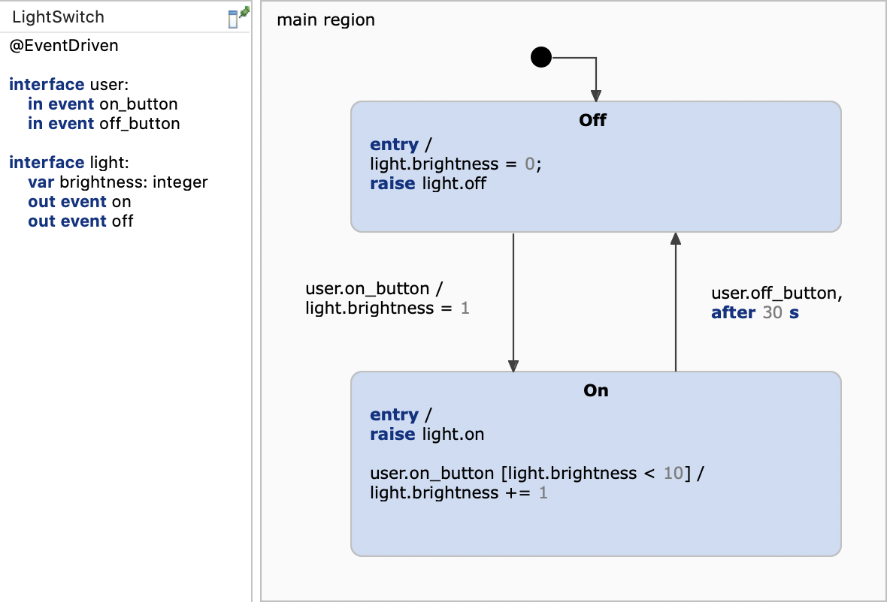

This example demonstrates how to generate C code from a statechart. We will use a simple light switch example and focus on the generator model.
In order to generate code we need to specify which code generator to use and into which folder to generate. For this, we need to create a so-called generator model. To do so,
This will create a default codegenerator task in the .vscode/tasks.json:
"label": "Generate Statechart Code",
"type": "codegenerator",
"generator": {
"statechart": "models/light_switch.scm",
"features": {
"Outlet": {
"targetProject": ".",
"targetFolder": "src-gen"
}
}
"type": "create::c"
},
"group": "build"
The generator model defines which target language should be used, where the code should be generated into, and enables the generation of a default timer service. Besides setting up the target location, the generator model allows you to adjust several aspects of the generated code like naming, license comments or function inlining. Press [CTRL]+[SPACE] to get a list of available features. For more information, please refer to our documentation.
Code generation is a build task that can be triggered manually or integrated as a pre-build task. To manually invoke code generation, open the .vscode/tasks.json file and click the code lens Run Task: Generate Statechart Code.
As an example application we will use the light switch example with brightness adjustment from the Basic Tutorial.

Our application is a simple interactive console with which the user can switch the light on or off. The complete application code is implemented in main.c:
The most important parts are commented in the main.c file. These are the bullet points:
user.on_button and user.off_buttonThe easiest way running the example is by installing the C/C++ extension. Open the main.c file and click on Run C/C++ File. Ensure that all .c files are added to the build task. This is a example build task for linux:
"type": "cppbuild",
"label": "C/C++: gcc build active file",
"command": "/usr/bin/gcc",
"args": [
"-fdiagnostics-color=always",
"-g",
"${fileDirname}/*.c",
"${fileDirname}/../src-gen/*.c",
"-o",
"${fileDirname}/${fileBasenameNoExtension}"
],
"options": {
"cwd": "${fileDirname}"
},
"problemMatcher": [
"$gcc"
],
"group": {
"kind": "build",
"isDefault": true
},
"detail": "Task generated by Debugger."A console should open and ask you for input like:
Light is off.
Type 1 or 0 to switch the light on or off.
1
Light is on.
Brightness: 1.
1
Brightness: 2.
1
Brightness: 3.
1
Brightness: 4.